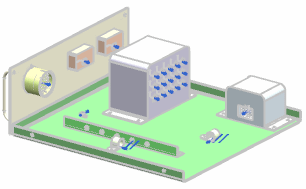

WAVE link the ports to your wire harness assembly
In order to attach the connectors to their respective devices, the device ports must be WAVE linked into your wiring harness subassembly. There are two approaches to this; You can either let NX automatically link individual ports into the harness assembly while you place your parts, or you can Wave-link all of the device ports into your harness assembly beforehand. In this part, the device reference sets have already been set to include ports. In your own parts, make sure to select the reference set that includes the ports.
-
From the Assembly Navigator, double-click ***_drawer_harness_1 to make it the Work Part.
-
Pin the navigator open.
-
On the Assemblies toolbar, click WAVE Geometry Linker
 .
.
-
In the WAVE Geometry Linker dialog box, from the Type list, select Routing Object.
You want to select each port on every device.
-
Drag a rectangle around the entire assembly.
All of the ports highlight.
-
点击确定。

All of the linked ports appear blue in your wiring harness subassembly.